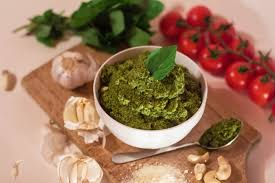

Pesto
Home

Description
Elevate your pasta dishes with fresh homemade pesto
Ingredients
- 1x bush/cup of fresh basil leaves
- 3x cloves of garlic
- 1x cup of grated parmesan
- 0.25x cup of pine nuts
- 0.25x cup of olive oil
- salt and pepper to taste
Steps
- Put blender in fridge to chill for 20min.
- toast pine nuts on low heat on stove.
- Put all Ingredients in blender and mix until smooth.
- Season to taste.